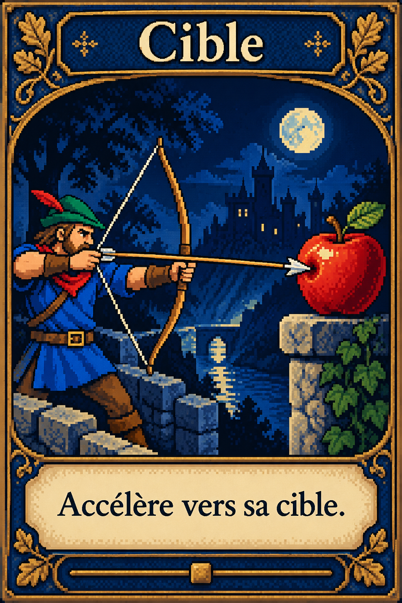
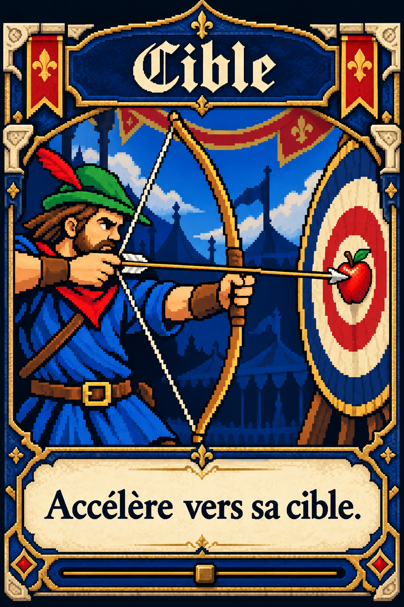
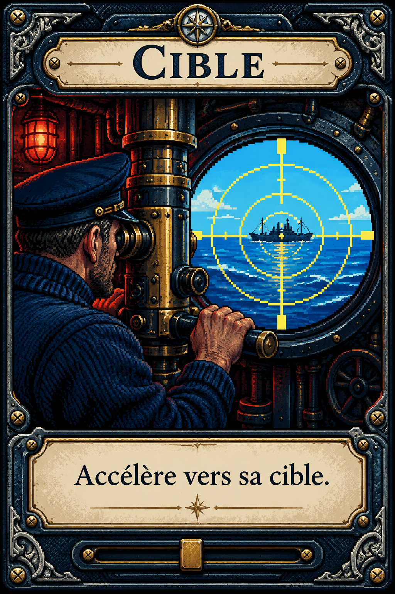
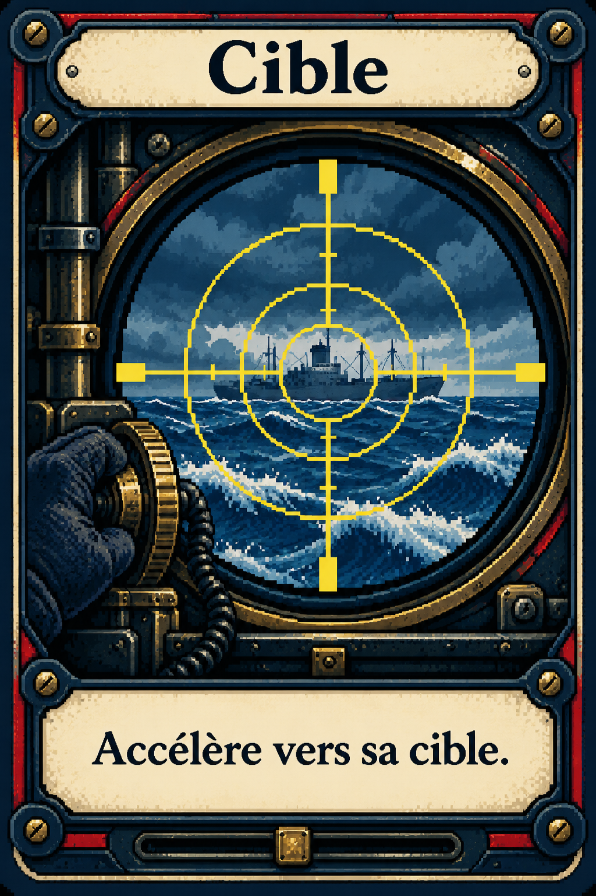

Cible
Accélère vers sa cible.
Perpetua Titling MT
+ Garamond
+ Garamond
Archer médiéval et guerre navale. Même effet, quatre traitements.

Enluminure nocturne, pomme rouge et titre gravé.

Héraldique, cible de tournoi et titre gothique.

Scène de commandement, acier gravé et lumière rouge.

Optique mécanique, mer agitée et cadre riveté.
Quatre associations de fontes. Titres et texte d’effet restent séparés.
Accélère vers sa cible.
Accélère vers sa cible.
Accélère vers sa cible.
Accélère vers sa cible.